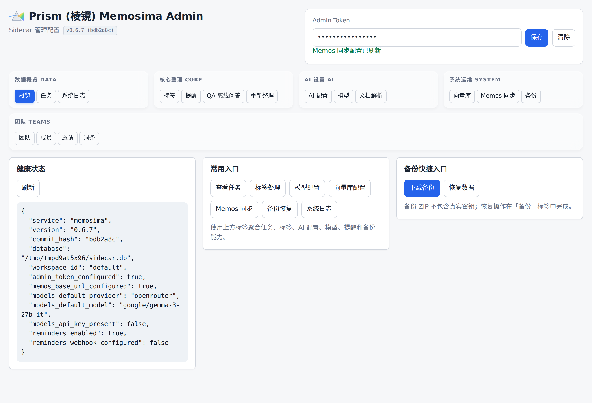
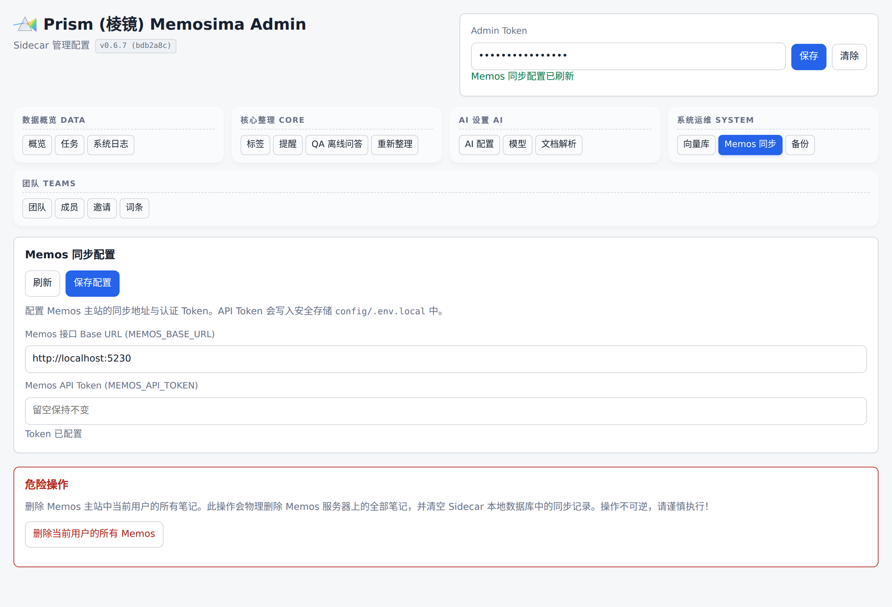
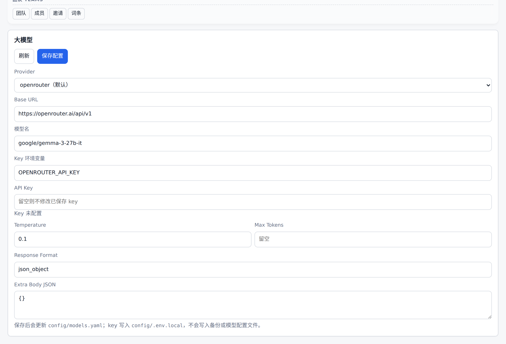
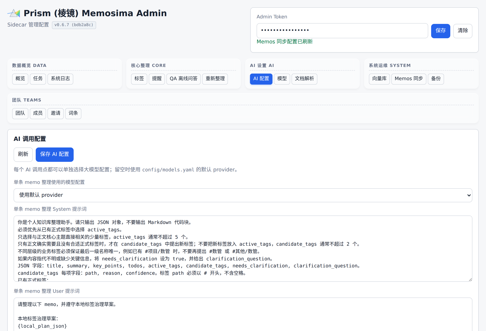
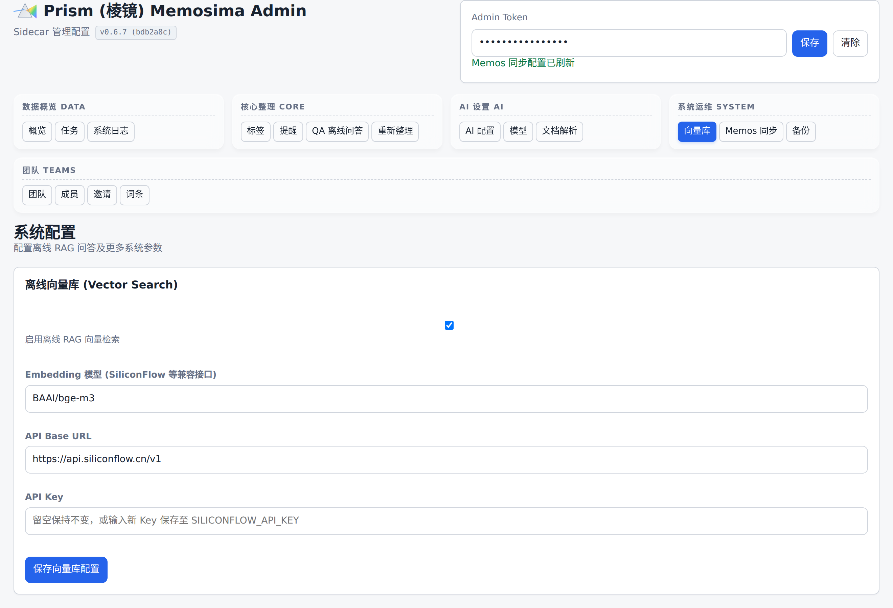

配置说明
本文按文件/章节展开，每一节都对应到 /admin/ui 中的一个面板 —— 几乎所有运行期可改的参数都不必直接编辑 YAML，打开管理后台对应 tab 就能在线保存并增量写回 config/*.yaml 与 config/.env.local。

/admin/ui 总览。顶部分组导航对应本文各章节：DATA / CORE / AI / SYSTEM / TEAMS。环境变量
复制示例文件：
cp .env.example .env
必须配置：
| 变量 | 说明 |
|---|---|
SIDECAR_ADMIN_TOKEN |
管理接口 Bearer 令牌 |
MEMOS_BASE_URL |
Memos 服务地址 |
MEMOS_API_TOKEN |
Memos API token |
MEMOS_WEBHOOK_URL |
Memos 回调 Sidecar 的公网 URL，例如 https://your-public-sidecar.example.com/webhooks/memos |
REMINDER_WEBHOOK_URL |
提醒通知出口。默认按 Bark 兼容接口发送 POST title/body 表单，例如 https://api.day.app/your-bark-key/。真实 token 只放在本地 .env 或部署密钥中。 |
OPENROUTER_API_KEY |
OpenRouter API key，作为备选 provider 使用。 |
DEEPSEEK_API_KEY |
DeepSeek API key，用于 DeepSeek OpenAI-compatible provider。 |
OPENROUTER_API_KEY、DEEPSEEK_API_KEY 只通过环境变量或本地 config/.env.local 读取，不写入仓库。不要把真实 key 提交到 git。
MEMOS_API_TOKEN 建议使用 Memos Personal Access Token，而不是登录接口返回的短期 access token。可通过 Nx 探针生成：
npx nx run sidecar:probe-memos -- \
--bootstrap-username test \
--bootstrap-password testtest \
--create-pat \
--pat-output-env-file /tmp/memosima-pat.env
探针默认不会在 JSON 输出中显示 PAT 原文；临时 env 文件只用于本机注入容器或复制到受控密钥管理位置。
app.yaml
config/app.yaml 控制 Sidecar 基础行为：
database.path：Sidecar SQLite 路径。security.admin_token_env：管理 token 的环境变量名。memos.base_url_env：Memos 地址的环境变量名。memos.api_token_env：Memos token 的环境变量名。memos.webhook_url_env：Memos 内置 webhook 回调 URL 的环境变量名。memos.ingestion_mode：memo 入口模式，默认poll，由 Sidecar 主动轮询 Memos，不需要公网 webhook；也可设为webhook或both。memos.poll_page_size：轮询时每次读取最近 memo 的数量，默认20。memos.admin_entry_enabled：是否在 Memos 中自动维护#系统/Memosima管理入口 memo（标题呈现为 **Prism (棱镜)** 入口），默认开启。memos.admin_entry_title：管理入口 memo 的标题，默认Prism (棱镜)。memos.admin_entry_visibility：管理入口 memo 的 Memos 可见性，默认PRIVATE。prompts.path：LLM 默认提示词配置文件路径，默认config/prompts.yaml。worker.max_attempts：任务失败后的最大尝试次数。worker.create_probe_comment：P0 探针是否在 memo 下写入测试评论，默认关闭。
本地部署推荐使用 poll 模式，不需要暴露公网地址。Memos 0.28.0 会拒绝 webhook URL 指向本机、Docker 内网或其他保留/私有 IP；只有在需要 webhook 模式时，才需要配置公网可达 URL 或公网隧道。
默认 Docker Compose 包含 gateway、memos、sidecar 和 sidecar-worker 四个服务。gateway 使用 Caddy 按路径分流：/admin/*、/health、/webhooks/* 到 Sidecar，其余路径到 Memos。默认只暴露 http://localhost:8080 一个宿主机入口；Memos 的 5230 和 Sidecar 容器内部 8080 不直接暴露。可以通过 GATEWAY_PORT 修改宿主机端口。
管理入口 memo 和 AI 整理 memo 中的管理链接由 app.public_base_url 生成；如果用户从其他设备访问 Memos，应把该值配置为浏览器可访问的统一网关地址，例如 http://192.168.1.10:8080 或反向代理域名。管理页面按「概览、任务、标签、AI 配置、模型、提醒、备份」聚合功能，并支持 #overview、#jobs、#tag-candidates、#tag-summary、#prompts、#models、#reminders 和 #backup 锚点直达。

/admin/ui#memos 面板 —— 上述 memos.* 字段全部支持在线编辑保存；真实 PAT 写入 config/.env.local，不会进入备份或 Git。reminders
reminders 控制 #提醒 时间识别和定时通知：
reminders:
enabled: true
trigger_tag: "#提醒"
webhook_url_env: REMINDER_WEBHOOK_URL
confidence_threshold: 0.75
request_timeout_seconds: 10
注：上述 reminders 所有配置（包括启用开关、触发标签、置信度、超时时间）均支持在管理页面提醒标签页的右侧侧边栏中直接编辑保存。其中，推送 Webhook URL（如 Bark 推送地址）支持加密输入，并将以最安全的方式自动增量保存至本地 config/.env.local 环境变量文件中，确保不会被 Git 提交，也无需人工手动编辑文件。
worker 只处理包含 trigger_tag 的 memo。命中后会调用 config/prompts.yaml 中 reminder_extraction.provider 指定的 OpenAI-compatible provider；该字段为空时回退到 config/models.yaml 的默认 provider。模型会抽取 title、body、due_at、timezone、confidence 和 raw_text，并把明确、未来且置信度不低于阈值的结果写入 SQLite reminders 表。同一 workspace_id、来源 memo、到期时间和标题是幂等键，避免重复创建。
到期扫描在 worker 空闲循环中执行，状态为 pending 或 failed 且 due_at 已到的提醒会发送到 REMINDER_WEBHOOK_URL。成功后状态变为 sent，失败会记录脱敏错误并保留为 failed 以便重试。发送内容不会把 webhook token 写入日志或 job result。
如果模型 key 未配置、抽取失败或时间不明确，提醒流程会记录跳过原因；时间模糊、低置信或已过期时会在原 memo 下评论要求补充，但普通 AI 整理流程仍会继续。

/admin/ui#reminders 面板。右侧的「触发标签 / 置信度阈值 / 超时 / Webhook URL」就是上方 YAML 字段的可视化映射；URL 输入框留空表示「保持已有值不变」，新输入的 URL/Bark Key 以加密方式增量写入 config/.env.local。models.yaml
当前默认模型配置使用 DeepSeek 的 deepseek-v4-flash，并保留 OpenRouter、OpenAI 等常用 OpenAI-compatible provider 模板：
default_provider: deepseek
providers:
openrouter:
base_url: https://openrouter.ai/api/v1
api_key_env: OPENROUTER_API_KEY
default_model: google/gemma-3-27b-it
temperature: 0.2
max_tokens:
response_format: json_object
extra_body: {}
openai:
base_url: https://api.openai.com/v1
api_key_env: OPENAI_API_KEY
default_model: gpt-4o-mini
temperature: 0.2
max_tokens:
response_format: json_object
extra_body: {}
deepseek:
base_url: https://api.deepseek.com
api_key_env: DEEPSEEK_API_KEY
default_model: deepseek-v4-flash
temperature: 0.2
max_tokens:
response_format: json_object
extra_body:
thinking:
type: disabled
config/models.yaml 只定义可用 provider 及其连接参数。实际调用时，organize_memo、tag_summary、reminder_extraction 会优先使用各自在 config/prompts.yaml 中配置的 provider；该字段为空或缺失时才使用 default_provider。DeepSeek 官方 OpenAI-compatible 入口使用 https://api.deepseek.com 作为 base_url，当前模板默认模型为 deepseek-v4-flash。base_url、default_model、temperature、max_tokens、response_format 和 extra_body 都从 config/models.yaml 读取。DeepSeek V4 默认开启 thinking mode，Sidecar 模板在 extra_body.thinking.type 中显式设为 disabled，用于摘要和标签总结这类只需要最终内容的单轮任务。max_tokens 留空时不会向模型请求发送输出 token 限制；Sidecar 也不会主动截断输入正文。extra_body 会原样合并到请求 JSON，适合配置厂商扩展参数。
管理页面 /admin/ui#models 可直接选择 provider、修改 base_url、模型名、响应格式、扩展 JSON 和 key。保存后，非机密参数写回 config/models.yaml；真实 key 写入已忽略的 config/.env.local，并由 API 与 worker 在后续加载模型配置时读取。备份 ZIP 不包含 config/.env.local。

/admin/ui#models 面板。API Key 字段为 password 输入框，留空 = 不修改已保存 key（图中显示「Key 未配置」是 demo 截图的干净状态）。memos
AI 整理 memo 不再写入任何业务 #tag。它只保留 #系统/AI整理、#系统/标签待审核 等系统标签，业务标签会在“标签”区域以普通文本显示，避免 AI 生成内容进入 Memos 原生业务标签筛选。memos.show_candidate_tags 保留为兼容配置，但当前生成逻辑不会用它把候选业务标签写成 Memos 原生标签。
只有用户原始 memo 没有任何业务标签时，Sidecar 才会接收 LLM 返回的 active_tags 和 candidate_tags。active_tags 只能使用已有正式标签；如果模型把未知标签放入 active_tags，Sidecar 会把它降级为候选标签。candidate_tags 用于 AI 从无标签正文提出的新标签建议，每项包含 path、reason 和 confidence。用户已经手写业务标签时，AI 标签建议会被忽略，只保留用户标签解析结果。新标签不会自动激活，必须通过候选标签审核。业务标签还要求最后一级名称全局唯一：已有 #项目/数管 时，#数管 和 #其他/数管 都不能再作为新的业务标签。
prompts.yaml
config/prompts.yaml 保存所有 LLM 调用点的默认提示词和模型选择。当前调用点包括 organize_memo、tag_summary 和 reminder_extraction，每个调用点都包含 provider、system 和 user。provider 可填写 config/models.yaml 中的 provider 名称；留空或省略时使用默认 provider。
organize_memo 用于单条 memo 的 AI 整理，支持以下占位符：
{active_tags}：当前工作区可直接使用的正式标签列表。{local_plan_json}：本地标签治理草案 JSON。{content}：原始 memo 正文。
tag_summary 用于按某一标签生成整体总结，支持以下占位符：
{tag}：要整理的标签。{memo_count}：参与整理的 memo 数量。{memos_markdown}：匹配该标签的 memo 列表，已转换为 Markdown。
reminder_extraction 用于从带触发标签的 memo 中抽取提醒时间，支持以下占位符：
{trigger_tag}：提醒触发标签，例如#提醒。{now}：按配置时区生成的当前时间。{timezone}：默认时区。{content}：原始 memo 正文和附件解析内容。
管理页面 /admin/ui 的“AI 调用配置”区域会写回 config/prompts.yaml；每个调用点都能单独选择模型配置并编辑中文提示词说明。任务重试时选择临时修改，只会写入该任务 payload 的 llm_prompt_override，不会临时改变该任务使用的 provider。Compose 已将 ./config 以可写方式挂载到 Sidecar 容器，便于从管理页面保存默认提示词。

/admin/ui#prompts 面板。3 类调用点（organize_memo / tag_summary / reminder_extraction）各自维护 provider + system + user 三段，保存即写回 config/prompts.yaml。备份恢复
管理接口 /admin/backups/download 会生成 Sidecar 备份 ZIP，内容包括 SQLite 快照 database/sidecar.db、manifest.json，以及 config/app.yaml、config/models.yaml、config/prompts.yaml、config/taxonomy.yaml 等非机密配置文件。真实密钥仍只通过环境变量或 config/.env.local 提供，不会写入备份包。
/admin/backups/restore 接收备份 ZIP 原始 body，并只恢复 Sidecar SQLite 数据库。备份包里的配置文件不会被自动应用，避免上传包覆盖运行配置或引入密钥风险。恢复范围不包含 Memos 主库、Memos 附件文件或外部对象存储。

/admin/ui#backup 面板。备份 ZIP 不包含 config/.env.local 与 Memos 主库；如需整体迁移，请同时使用仓库根目录的 backup.sh。taxonomy.yaml
config/taxonomy.yaml 保存系统标签、初始业务标签、别名和禁用标签。路径由 config/app.yaml 中的 taxonomy.path 指定。
当前 P2 本地整理草案会读取该配置：
system_tags：用于标识原始记录、AI 整理、待澄清、标签待审核等状态。business_tags：已审核业务标签；只有status: active的标签会被直接使用。aliases：把常用别名映射到正式业务标签。disabled：禁用标签，命中后不会进入正式标签或候选标签。
业务标签按路径表达层级，但唯一性按最后一级名称检查。例如 #项目/数管 的最后一级是 数管；配置、运行期审核和 AI 自动候选都不允许再出现 #数管 或 #其他/数管。如果用户在 memo 中写了 #数管，且系统中唯一匹配的正式标签是 #项目/数管，后台会归一为该正式标签。
worker 会把解析结果写入 job result.ai_plan。内容明确时会用 system_tags.ai_summary 创建 AI 整理 memo；内容过短时会用 system_tags.pending_clarification 标记草案，在原 memo 下写澄清评论，并把任务置为 waiting_user。问号、URL 参数等特殊字符不会单独触发待澄清。
候选标签持久化后会进入 Sidecar SQLite 的 tag_candidates 表，可通过 /admin/tag-candidates 查询，并通过 /admin/tag-candidates/{id}/approve 或 /admin/tag-candidates/{id}/reject 审核。审核通过后会同步写入 business_tags 表并标记为 active，worker 后续会把这些标签与 config/taxonomy.yaml 中的 active 标签合并使用。当前审核结果不会自动改写 config/taxonomy.yaml。
也可以打开 http://localhost:8080/admin/ui 使用调试管理页面审核候选标签。该页面要求手动输入 SIDECAR_ADMIN_TOKEN，token 只保存在当前浏览器，不会由服务端注入页面。

/admin/ui#tags 面板。上方按标签生成总结支持 OR / AND 多标签组合 + 临时提示词覆盖；下方候选标签队列即 tag_candidates 表的可视化审核入口。document_parser
document_parser 用于配置 Office/PDF 附件转 Markdown 的解析 provider。当前默认 provider 为 mineru，真实 token 从 MINERU_API_TOKEN 环境变量读取，只放在本地 .env 或部署密钥中，不提交到 git。
document_parser:
provider: mineru
token_env: MINERU_API_TOKEN
base_url: https://mineru.net
timeout_seconds: 60
poll_interval_seconds: 3
max_polls: 60
mineru_model_version: vlm
language: ch
enable_table: true
enable_formula: true
is_ocr: false
worker 会先从 Memos 下载附件。.txt 和 .md 在本地安全解码；.doc、.docx、.xls、.xlsx、.ppt、.pptx 和 .pdf 会调用文档解析 provider 转成 Markdown。Markdown 会写入 artifacts 表，并在调用 LLM 前拼接进原 memo 正文，后续 AI 整理和自动标签流程保持不变。provider 设计为可替换，后续可以接入本地 LibreOffice、unstructured 或其他在线解析服务。
如果原 memo 正文为空且至少一个附件成功进入解析结果，LLM 返回标题后，worker 会调用 Memos 内容更新接口把该标题回写到原 memo。job 结果中会记录 original_memo_title_updated 和 original_memo_title，便于在管理页或 API 中排查。

/admin/ui#docparser 面板。所有 document_parser.* 字段都可视化编辑保存；API Key 字段为「留空 = 不修改」语义，写入 config/.env.local。vector_search
vector_search 控制 Sidecar 是否把原 memo / AI 整理摘要 / 团队词条切分为 chunk 入库到向量表，以及 /admin/qa/generate-prompt、/teams/{slug}/search 等接口在勾选「从向量库里取」时使用的嵌入服务：
vector_search:
enabled: true
model: BAAI/bge-m3
base_url: https://api.siliconflow.cn/v1
api_key_env: SILICONFLOW_API_KEY
未配置 SILICONFLOW_API_KEY 时，Worker 跳过入库，QA / 团队检索自动降级为「标签 + 正文模糊」双通道，行为与个人 RAG 面板一致，不阻断主流程。

/admin/ui#vector-search 面板。API Key 字段同样是「留空保持不变」；保存后 config/app.yaml 写回非机密配置、key 写 config/.env.local，下次 worker 重启即生效。limits
limits.max_attachment_mb 控制单个附件解析大小上限。limits.allowed_parse_extensions 控制允许进入解析流程的扩展名。limits.max_ai_active_tags 控制单条无标签 memo 最多接收多少个 AI 补充的正式标签，默认 5；limits.max_ai_candidate_tags 控制单条无标签 memo 最多接收多少个 AI 新候选标签，默认 2。用户在正文里手动写出的标签不会因为该限制被吞掉。
当前已实现 .txt、.md、Word、Excel、PPT 和 PDF 解析。.drawio、.drawio.svg 和 .json 仍保留在配置中，后续接入专用解析器前会被跳过，不会主动执行未知格式内容。